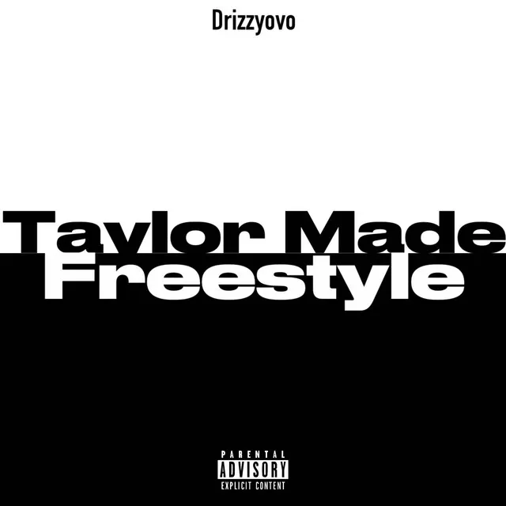

Taylor Made Freestyle
Cible : Kendrick Lamar • 3:30 min
⚠️ Retiré des plateformes (Legal/Estate)[2Pac (AI):]
Killuminati
Dons rise again
You can see it in my eyes again
Kendrick, we need ya, the West Coast savior
Engraving your name in some hip-hop history
If you deal with this viciously
You seem a little nervous about all the publicity
Fuck this Canadian lightskin, Dot
We need a no-debated West Coast victory, man
Drake utilise une IA pour imiter Tupac Shakur, le "Saint Patron" du rap de la West Coast. En faisant dire à Tupac que Kendrick doit "sauver" la côte ouest d'un "métis canadien", Drake humilie Kendrick deux fois : il utilise son idole contre lui et souligne son silence après "Push Ups". C'est une manœuvre psychologique visant à forcer Kendrick à sortir de sa réserve sous peine de paraître indigne de l'héritage de Pac.
Call him a bitch for me
Talk about him likin' young girls, that's a gift from me
Heard it on the Budden Podcast, it's gotta be true
They told me the spirit of Makaveli is alive
In a nigga under 5'5", so it's gotta be you
I would beef the whole fuckin' game
It was me and Snoop Dogg, had my fuckin' shirt off in the House of Blues
K, you gotta fuck this nigga girl, he gotta get abused
All that shit 'bout burning tattoos, he is not amused
That's jail talk for real thugs, you gotta be you
Gotta leave this motherfucker broken and bruised before we really lose
You asked for the smoke, now it seem you too busy for the smoke
I won't lie, the people confused
Now you 'bout to give this shit another week?
And fall back to home girl who runnin' numbers up? I woulda refused
Fuck these industry relationships, she not in your shoes
You supposed to be the boogeyman, go do what you do
Unless this is a moment that you tell us this not really you
In that case, there's nothing left to say, I'll just pass it to Snoop
Drake (via Pac) tourne en dérision les comparaisons fréquentes entre Kendrick et Tupac. En précisant "en dessous de 1m65" (5-foot-5), il ramène le débat à l'humiliation physique de "Push Ups". Il donne aussi ironiquement des "conseils" sur la manière d'attaquer Drake (les rumeurs sur les jeunes filles), pré-validant ses propres faiblesses pour mieux les désamorcer.
[Snoop Dogg (AI):]
Nephew, what the fuck you really 'bout to do?
We passed you the torch at the House of Blues
And now you gotta do some dirty work, you know how to move, right? Right?
I know you never been to jail or wore jumpsuits and shower shoes
Never shot nobody, never stabbed nobody
Never did nothing violent to no one, it's the homies that empower you
But still, you gotta show this fuckin' owl who's boss on the West
Now's a time to really make a power move
'Cause right now it's looking like you writin' out the game plan on how to lose
How to bark up the wrong tree and then get your head popped in a crowded room
World is watching this chess game, but are you out of moves?
Dot, you know that the D-O-G never fuckin' doubted you
But right now it seem like you posted up without a clue
Of what the fuck you 'bout to do
Drake utilise ensuite l'IA de Snoop Dogg pour rappeler un moment historique de 2011 où Snoop et Game ont officiellement passé le flambeau à Kendrick sur scène. En faisant demander à Snoop "qu'est-ce que tu vas faire ?", Drake suggère que Kendrick est en train de gâcher cet héritage en restant silencieux face à "l'Hibou" (le logo d'OVO).
[Drake:]
Yeah, unc', that's the truth
I'm definitely 'bout to come around the Lang gang and let my fuckin' bowel move
Shittin' on you niggas from a whole different altitude
High up in the sky like I'm Howard Hughes
The first one really only took me an hour or two
The next one is really 'bout to bring out the coward in you
Drake entre enfin avec sa propre voix. Il se compare à Howard Hughes, milliardaire excentrique et pionnier de l'aviation connu pour son isolement et sa vision d'en haut. Il minimise l'effort de ses attaques ("une heure ou deux"), traitant le beef comme une distraction mineure pour quelqu'un de son envergure financière et mondiale.
But now we gotta wait a fuckin' week 'cause Taylor Swift is your new Top
And if you 'bout to drop, she gotta approve
This girl really 'bout to make you act like you not in a feud
She tailor-made your schedule with Ant, you out of the loop
C'est l'explication du titre. Taylor Swift lançait son album "The Tortured Poets Department" cette semaine-là. Drake suggère que Kendrick (et son label) n'osent rien sortir pour ne pas être écrasés par les chiffres de Taylor. Il affirme qu'elle est le "nouveau boss" de Kendrick (nouvelle allusion à "Top" de TDE), le réduisant à un pion marketing incapable de mener son propre combat selon son calendrier.
Hate all you corporate industry puppets, I'm not in the mood
I love it when you niggas talk loose like I'm not in the room
Since "Like That," your tone changed a little, you not as enthused
How are you not in the booth? It feel like you kinda removed
You tryna let this shit die down, nah, nah, nah
Not this time, nigga, you followin' through
I guess you need another week to figure out how to improve
What the fuck is taking so long? We waitin' on you
The rest of y'all are definitely involved, y'all gettin' it too
Soon as you get the courage to drop, I'm out on the loose, on the loose
Yeah, shout out to Taylor Swift
Drake conclut en qualifiant ses adversaires de "pantins corporatistes", retournant ironiquement l'accusation souvent portée contre lui. Il remarque que depuis la sortie de "Push Ups", l'enthousiasme de Kendrick semble avoir disparu. Il réitère sa menace de fin de "Push Ups" : il essayait d'être "PG" (tous publics), mais la suite sera beaucoup plus violente.
Une erreur dans les paroles ou l'analyse ?